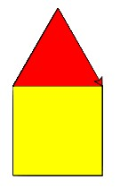

Informatica: Kennismaken met programmeren
In deze opdracht gaan we met code tekenen! We gaan een turtle (schildpad) besturen met Pythoncode.
In het volgende filmpje van 1,5 minuut geef ik een toelichting over de opdrachten die je gaat maken:
Opgave Vierkantje tekenen
Hieronder staat een aantal commando's die we aan een turtle geven.- Druk op de groene Playknop rechtsonder de code om te zien wat de code doet.
- Kun jij achterhalen wat elk commando doet?
De bruine tekst achter een # is alleen extra uitleg voor jou; daar doet de computer niets mee.
- Pas de code hieronder aan zodat de turtle een vierkant tekent.
Figuur inkleuren
Om een figuur in te kleuren:
- kies een kleur, bv. op regel 4:
turtle.fillcolor("red"), - geef aan wanneer turtle begint met het figuur te tekenen, bv. op regel 6:
turtle.begin_fill() - en wanneer die klaar is met tekenen, bv. op regel 8:
turtle.end_fill()
Opgave Vierkantje inkleuren
Pas je eigen code van de vorige opgave aan zodat de turtle je vierkant inkleurt:Dat doe je zo:
- Kies eerst een vulkleur. Op regel 4 zet je:
turtle.fillcolor("blue"). In plaats van "blue" kun je ook kiezen voor red, orange, purple, brown, yellow, black, green ... - Geef aan waar de code voor je figuur begint, met:
turtle.begin_fill(). Zet de code VOOR de codeturtle.forward(100), want daarmee begint je figuur. - Geef aan waar de code voor je figuur eindigt, met:
turtle.end_fill(). Dit zet je na de laatsteturtle.forward(100).
Opgave Huisje tekenen
Laat turtle een huisje tekenen:
Teken een dak op je vierkant om zo een huisje te maken. Kies zelf mooie kleuren voor je dak.
Tips: Het kan lastig zijn om het dakje precies goed te krijgen. Teken eerst je huisje op papier, schrijf de lengtes en de hoeken erbij zoals de schildpad (of je pen) ze moeten maken. Klik hier voor een voorbeelduitwerking.
Meer dingen met turtle
Hier zijn een paar andere dingen die turtle kan:
turtle.pendown() # Zet pen op papier. Alle bewegingen hierna worden zichtbaar
turtle.penup() # Haal pen van papier. Bewegingen hierna worden niet zichtbaar
turtle.pencolor("darkViolet") # Kleur van de pen. Je kunt ook kiezen uit black, green, gold, blue, red, yellow...
turtle.pensize(8) # Dikte van de pen
turtle.shape("turtle") # Maakt een schildpadje van de cursor in plaats van een pijltje
turtle.right(90) # Draai 90 graden naar rechts
turtle.left(45) # Draai 45 graden naar links
turtle.forward(10) # Loop 10 stappen vooruit
turtle.goto(40, 40) # Zet de schildpad op positie (x,y). (0,0) is het midden van het scherm
turtle.setheading(90) # Kijkrichting: 90 is naar boven, 0 is naar rechts
turtle.circle(50) # Teken een cirkel met een straal van 50 pixels
turtle.circle(60, 180) # Teken een halve cirkel (180 graden) met een straal van 60
Opgave Voorletter
Laat turtle jouw voorletter schrijven. Gebruik verschillende diktes en kleuren. Vergeet ook de vulkleur niet!Opgave Nederlandse vlag
We gaan nu de Nederlandse vlag tekenen zoals hier is afgebeeld.